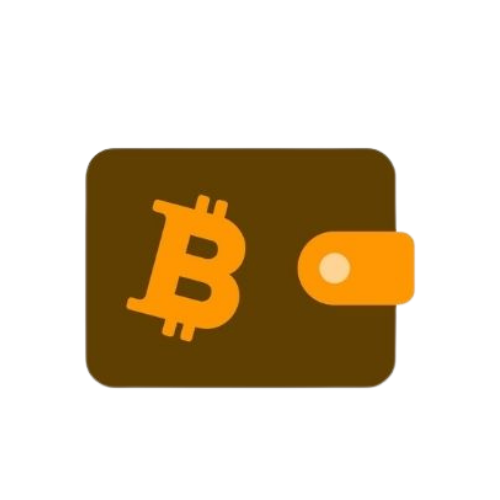
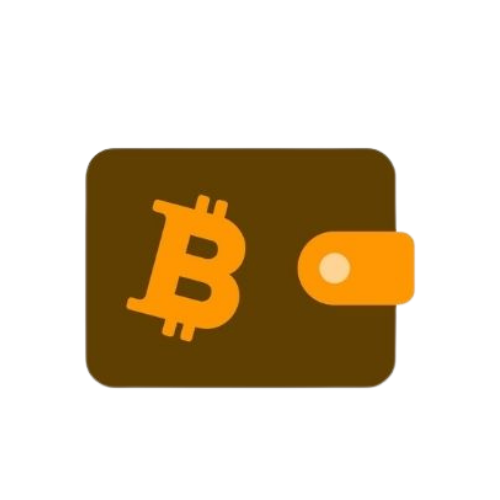

Your anonymous Tor Bitcoin Wallet and Laundry
OnionWallet Features:
• Free Bitcoin Mixer! You will always get get completely different Bitcoins on withdrawals with no "taint" to your recieving address.• Safe storage: we keep most of the bitcoins in secure encrypted offline storage.
• Protect your funds with a transaction PIN.
• Anonymous registration: We do not need any private data.
• Very simple user interface, no complicated options and settings.
• NO FEES except the bitcoin network fee!
Get started using Bitcoins in 2 simple steps:
• Register an account on OnionWallet and write down your username, password and optionally PIN at a secure place.• Purchase Bitcoins to your Bitcoin address in your OnionWallet account using for example one of the following exchange services:
http://www.nanaimogold.com/ - Buy Bitcoins through: Cash Deposit and Westernunion internationally
http://localbitcoins.com/ - Buy Bitcoins locally with cash - person to person - no banks involved.
https://bitcoinnordic.com/ - Buy Bitcoins using wire transfer and cash in mail.
https://en.bitcoin.it/wiki/Trade#Currency_exchanges - Big list of many more Bitcoin exchanges.
Why you should use OnionWallet:
Bitcoin and Bitcoin wallets itself are not really anonymous, they only provide so called pseudonymity, which means as long as no one knows which Bitcoin addresses you are using, you are anonymous. That anonymity is easily destroyed when you deal with some party that knows your real identity, for example if you sell or buy bitcoins on an exchange. And with more and more exchanges and other services following AML and KYC policies, its getting really hard to stay anonymous to government agencys when dealing with bitcoins. OnionWallet helps you break that chain, since its hosted at a Tor hidden service, and no one knows who we are, we do not have to follow any AML and KYC policies, so we cannot be forced to give out any of our users information. Even if we wanted to, we do not have much information about our users since through tor we do not see any ips or other sensitive data. OnionWallet mixes all bitcoins, which makes tracing you on the Bitcoin blockchain impossible.Bitcoin and Tor, a perfect team
When using Bitcoin together with Tor you are combining the best online money with the best encryption and privacy technology available. Its simply not possible to know you are not under surveillance when using normal internet websites for managing your Bitcoins. Only a shared Bitcoin Web Wallet hosted as a Tor hidden service will provide you maximum anonymity and privacy!Free Bitcoin Laundry, Bitcoin Washing, Bitcoin Mixer
Launder your Bitcoins without any fees, all we charge is the network fee we pay to bitcoins miners. For mixing your Bitcoins, or washing them, it is best to use a Tor hidden service like OnionWallet because all mixers operating a clearnet website, including coinfog, are subject to government control.
Sign Up Now

